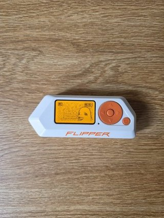
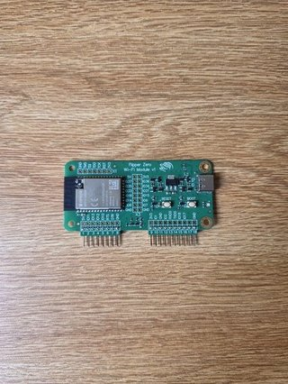
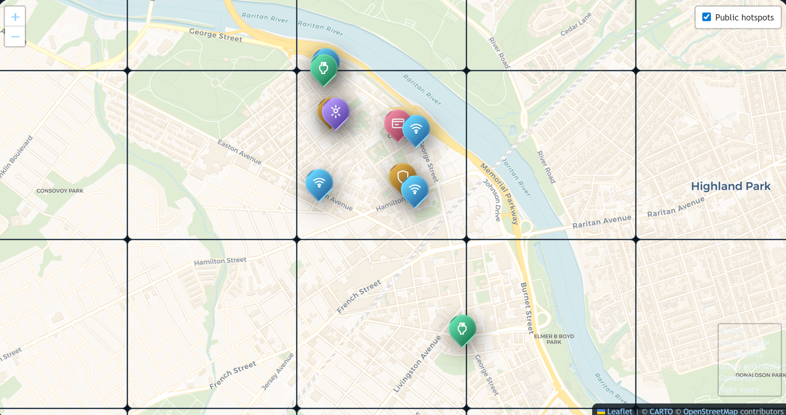

Reviews
Tool reviews (Flipper Zero, HackRF One) with pros/cons and reference links.
Rutgers Digital Safety Layer
Maps, pictorial essays, and tool reviews for understanding campus safety.
This site collects reviews of field tools, a pictorial inventory of adversarial and infrastructure artifacts, and an interactive campus map that ties location profiles to symbolic ratings. The project demonstrates how physical objects, connectivity, and routine interactions shape a campus-scale safety surface. Use the links below to jump directly to reviews, the pictorial inventory, or the interactive map.
Direct links to the three primary content areas of this project.

Tool reviews (Flipper Zero, HackRF One) with pros/cons and reference links.

Photo essays documenting adversarial tools and the campus attack surface.

Interactive Leaflet map of campus nodes with profile cards and legend.